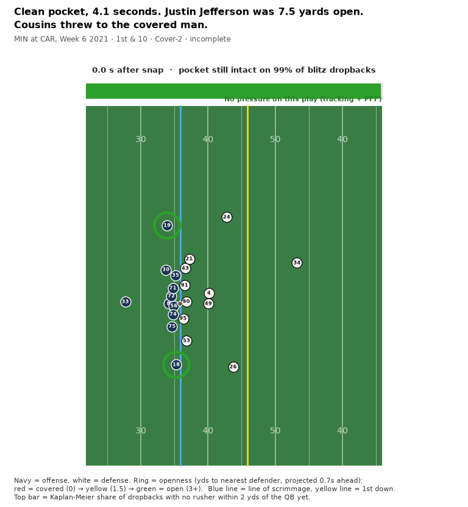
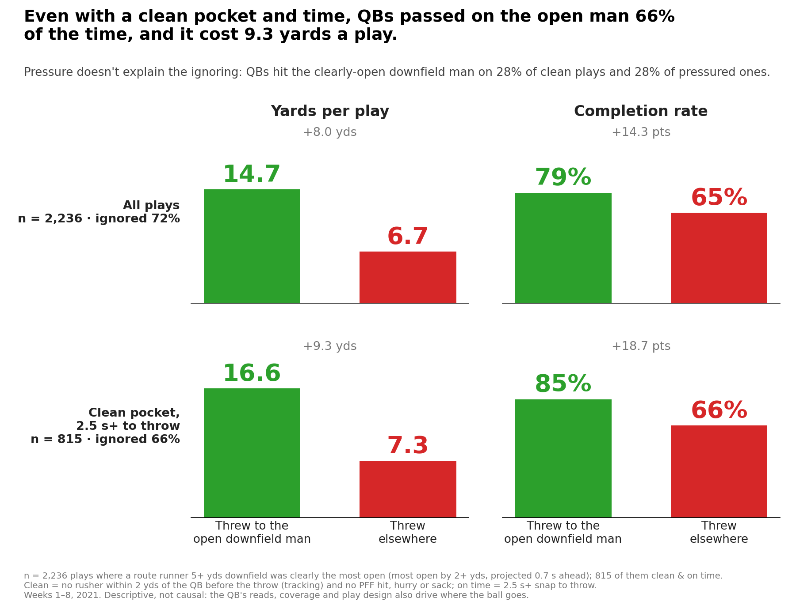
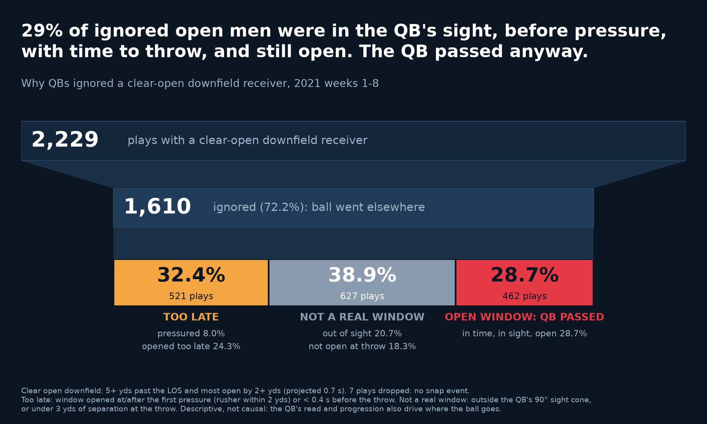
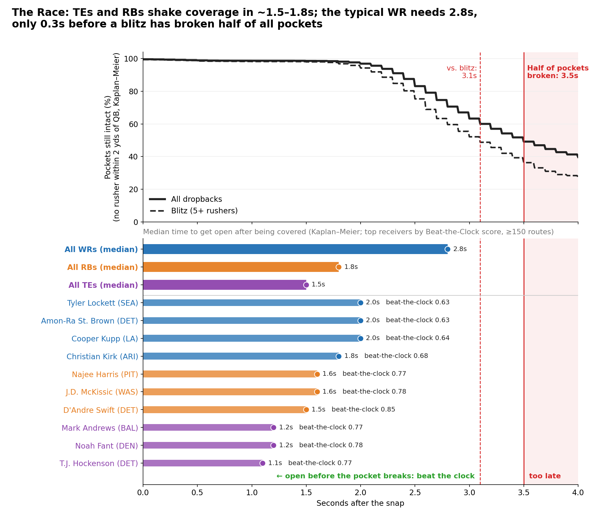
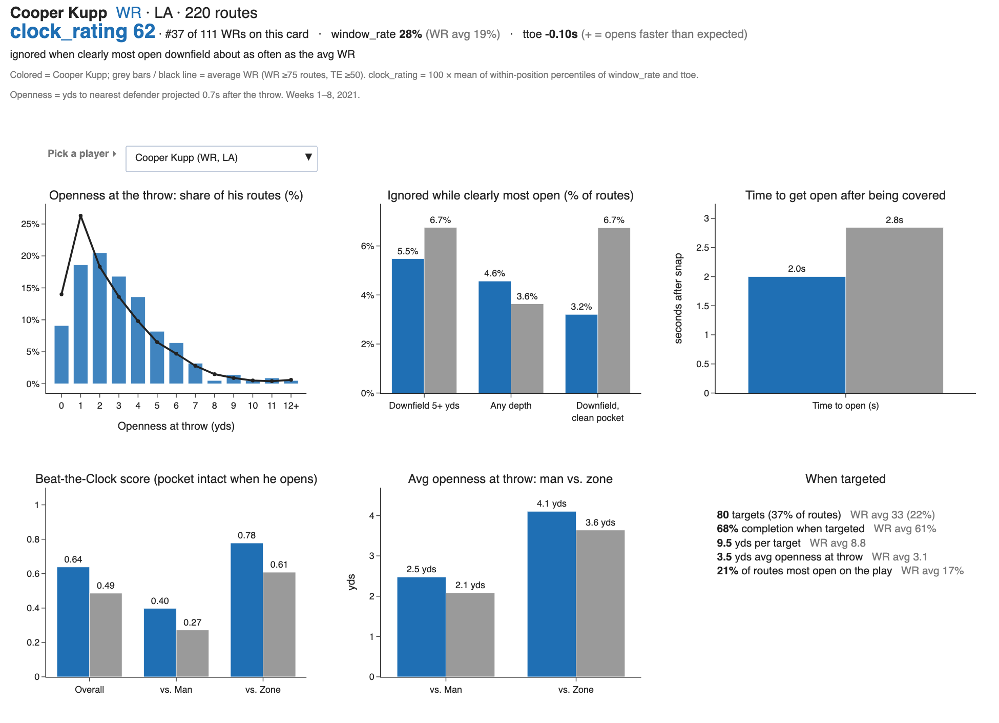

The Open Man They Ignored, and the Clock He Was Racing
NFL Big Data Bowl tracking, 2021 weeks 1–8. On 2,229 plays a receiver 5+ yds downfield was clearly the most open; QBs threw to him on 619 and passed on him 72% of the time. Pressure doesn't explain it: QBs hit him on about 28% of plays whether the pocket was clean or not. On 462 ignored plays he was open in time, in the QB's sight, and still open at the throw.
1 · Play replay: clean pocket, Watkins 10 yds open, ball goes elsewhere
Snap to throw with openness rings and the pocket clock. PHI at CAR, Week 5: no pressure, 3.0 s to throw, Hurts targets a covered Zach Ertz.


2 · The Cost of Ignoring
Hitting the clearly-open downfield man: 79% completions and 14.7 yds/play vs. 65% and 6.7 elsewhere. With a clean pocket and 2.5 s+, QBs still passed on him 66% of the time, at a cost of 9.3 yds a play (16.6 vs. 7.3).

3 · Why he was ignored
Each ignored open man, sorted by the first check he fails: too late (opened after pressure or under 0.4 s before the throw), not a real window (outside the QB's 90° sight cone, or under 3 yds open at the throw), or an open window the QB passed up.

4 · The Race
Pocket survival vs. how fast each position (and the top receivers) get open after being covered.

5 · Player scouting card
Pick any WR (75+ routes) or TE (50+). The headline is his clock_rating, window_rate and ttoe, then how he compares with his position average, including how often he's ignored with a clean pocket.

Colour key used throughout:
WR TE RB
offense defense
open covered.
Regenerate everything with python make_viz.py.